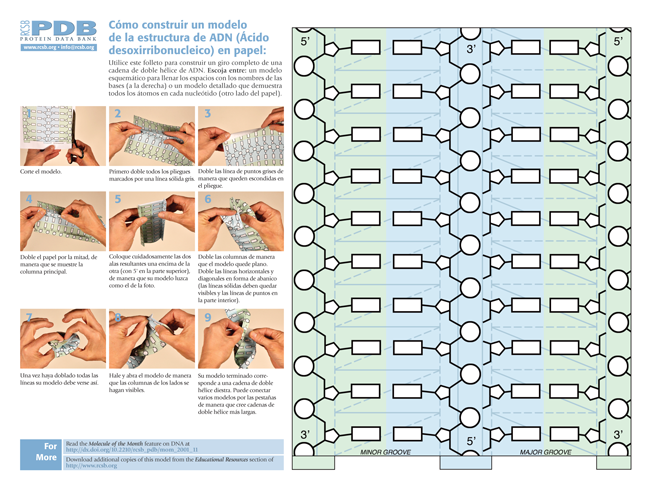

En contraste con los algoritmos de dinámica molecular, que en general no se pueden ejecutar en PCs,
tenemos a nuestro alcance otros métodos más simples, en general heurísticos, que permiten obtener
descripciones e inferencias estructurales de calidad suficiente para muchas aplicaciones y que en general sí se pueden
realizar en cualquier computador. Los siguientes capítulos del curso se centran en algunos de estos métodos.
Para proteínas podemos mencionar los más importantes:
- Observación de los patrones de sustitución de aminoácidos en familias de proteínas,
que pueden explotarse para aplicaciones tan variadas como:
- Predicción de estructura secundaria por aprendizaje automático, normalmente por medio de redes neuronales (Jurtz et al., 2017),
como se describe en la sección 4.2).
- Algoritmos de predicción de secuencias intrínsecamente desordenadas (Dunker et al., 2008) y de amiloides (Agostini et al., 2012; Bryan et al., 2011).
Se mencionan en la sección 4.2).
- Modelos predictivos para proteínas de membrana (Nugent & Jones, 2012; Perez-Aguilar & Saven, 2012).
- Predicción de efectos/fenotipos de mutaciones no sinónimas en proteínas (sección 5.6).
- Definición de modelos evolutivos específicos de familias de proteínas (Arenas et al., 2017),
que son la base de los protocolos de fold recognition de la sección 5.3 y de predicción de contactos
de la sección 5.5.
- modelado de estructura terciaria por comparación con proteínas de estructura conocida (incluye fold recognition ,
más en este enlace)
- protocolos de modelado de estructura terciaria a base de fragmentos, que simulan el proceso de
plegamiento (normalmente denominados ab initio )
Dentro del ámbito de los ácidos nucleicos:
- algoritmos de predicción de estructura secundaria de ARN
- métodos de predicción de estabilidad de la doble hélice de ADN y predicción de promotores
- predicción de curvatura del ADN
Figura 2.9:
Modelo recortable de la doble hélice de ADN.
|

|
PDF
Bruno Contreras-Moreira
http://www.eead.csic.es/compbio